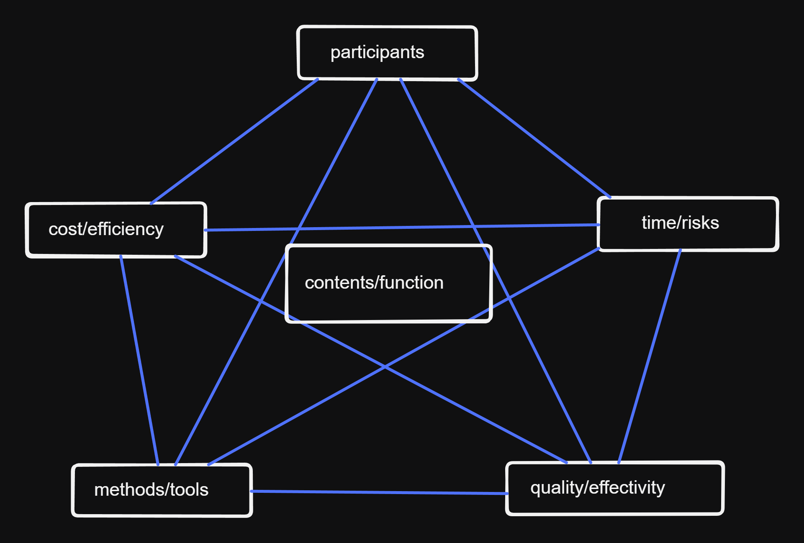

8 SWE Process & Project Management
Making sure that the Software system is developed withing the time money constraints.
topics:
- Project management
- SWE-process models & methods
Intro
Related core question: how ensure that the software system will be successfully developed using given resources (money, humans, technology) within the defined time and cost constraints?
- process: Abstract specification of the method and it’s structure that will be used to develop the software.
- project: An instance of such a process
Project Management
The application of knowledge, skills, tools, and techniques to activities contained in a project to achieve the project requirements.
contents of PM:
- appointments (milestones)
- costs
- risks
- participants:
- team
- client / contractor
- functionality
- quality

magical pentagon:
- project contents / function
- quality / effectivity
- costs / efficiency
- time / risks
- participants
- methods / tools
Task of project management:
- planning
- organization
- personnel development
- leadership / coordination
- control
- motivate and inform
phases of project management:
- start / initiate
- plan
- control and execute \(\Rightarrow\) feedback control loop
- close
SWE-Process models & methods
For every project there is an underlying process (process model)
How is process described:
- actors
- activities
- results
- guidelines
- boundary conditions
Process Models
General paradigms:
- waterfall
- evolutionary / iterative / incremental development
- spiral
- V-model
- agile
Process models in practice
- V-Model XT
- XP, Scrum (Agile processes)
Waterfall
Waterfall model is Stepwise:
- requirements analysis <=> functional spec <=> design <=> implementation <=> testing
Evaluation:
- not flexible: dependency on earlier steps
- late testing
- late implementation \(\Rightarrow\) late validation / verification
- clear separation of tasks nd steps, low management effort
Evolution / Iteration / Increment
- early validation of requirements
- rapid prototyping: via a prototype
- evolutionary: prototype gets improved on
- iterative: all of the steps are decomposed in small increments (from requirements to coding)
- incremental: step-wise further development of a core system
Evaluation:
- early QA via a prototype and early deployment (of a prototype)
- early communication with users via prototype / early deployment
- iteration is further development in small steps
- iterations in small steps is good but not easy to determine the iteration steps in advance for large project
- For rapid prototyping and evolutionary methods there is no clear project planning, therefore suitable only for smaller projects.
Spiral Model
The Spiral Model is a risk-driven software development and project management approach that combines iterative development with systematic risk analysis. It consists of four key phases:
- Planning – Define objectives, constraints, and alternatives.
- Risk Analysis – Identify and assess risks, and develop mitigation strategies.
- Engineering & Development – Build, test, and refine prototypes or system components.
- Evaluation & Review – Gather feedback, validate progress, and decide on next iterations.
This process repeats in cycles (spirals), gradually refining the system with each iteration. It is particularly useful for complex, high-risk projects requiring flexibility and continuous stakeholder involvement.
Evaluation:
- early QA due to risk analysis and testing
- early communication with users via prototypes \(\Rightarrow\) early validation / verification
- many documents (danger of having too much documentation)
- high flexibility due to repetitive planning, goal and risk analysis
- high management effor \(\Rightarrow\) suitable for large projects
V-Modell
A verification and validation-driven development model that expands the Waterfall model into a V-shaped structure. Each development phase (left side) has a corresponding testing phase (right side). It ensures early defect detection and is widely used in safety-critical systems (e.g., aerospace, automotive).
The phases and their corresponding tests:
- requirements definition <=> acceptance test, system test
- rough design <=> system test, integration test
- detailed design <=> integration test, module test
- module specification <=> module test
- programming (where the two branches meet)
Evaluation:
- very good QA due to early QA-planning and testing at each phase
- no prototyping, late implementation, no iterations like in waterfall
- early QA planning simplifies QA management aspect of PM
- should be used in conjunction with iterative methods
V-Modell XT
A German government standard for system and software development, refining the V-Modell with increased flexibility, modularity, and project tailoring. It emphasizes customization based on project needs and is commonly used in public sector and large-scale projects.
Evaluation:
- early QA-planning like V-Model and risk-analysis like spiral model
- if agile or incremental methods are applied then early validation with the users is possible
- Very beurocratic and documentation-heavy \(\Rightarrow\) suitable only for large projects
- adaptability to different projects is good but high effort
XP: An Agile Process
An agile software development methodology focusing on frequent releases, continuous feedback, and close collaboration. Key practices include
- pair programming,
- test-driven development (TDD),
- continuous integration,
- continuous customer involvement.
- Ideal for projects requiring rapid adaptability and high-quality code.
Key features:
- on-site customer
- short increments
- planning game \(\Rightarrow\) user stories
- simple design
- refactoring
- pair programming
- unit test
- CI/CD
- coding standards
Scrum: Another Agile Process
lightweight agile framework for managing complex projects through iterations (sprints). It features time-boxed cycles (2–4 weeks), daily stand-ups, backlog management, and defined roles (Scrum Master, Product Owner, Developers). Best suited for dynamic, fast-changing environments.
process:
- client requirements as story
- analysis
- planning
- implementation / evaluation
- metrics
in short iterations.
roles:
- ProductOwner:
- represents client
- defines vision of the software
- creates user stories
- prioritizes requirements in the product backlog
- Team: planning and results
- ScrumMaster (not the same as ProjectManager)
- facilitates productive environment for the team
- communication ProductOwner <=> Team
- makes decisions
artifacts:
- User story: consts of cards, conversations and acceptance criteria
- cards: 1 sentence as a requirement “As user role X I want to do Y”
- conversation: all question necessary for understanding of the software
- acceptance criteria: description when a story is considered fully implmented?
- product backlog:
- list of all user stories of current sprint
- user stories are prioritized
Evaluation of XP and Scrum:
- very good QS-practices: acceptance test, Unit-test
- very good user validation and user communication: onsite-customer (XP), ProductOwner (Scrum)
- furhter development and maintenance not very well supported due to lack of documentation (XP very little documentation, Scrum user stories not very sufficient)
- adherence to the plan and complience with resources very good:
- XP: 40h week
- Scrum: ScrumManager
- too little structure for large projects.
New Approaches: Continuous Software Engineering
A modern software engineering approach emphasizing continuous integration, deployment, and delivery (CI/CD). Developers frequently commit changes, ensuring automated testing and deployment. This enables rapid, reliable software updates and is crucial for DevOps and cloud-native development.